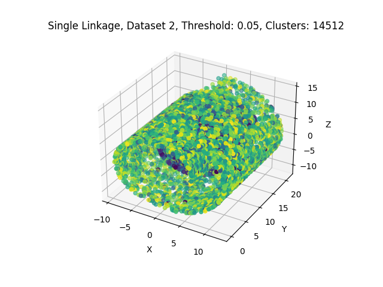
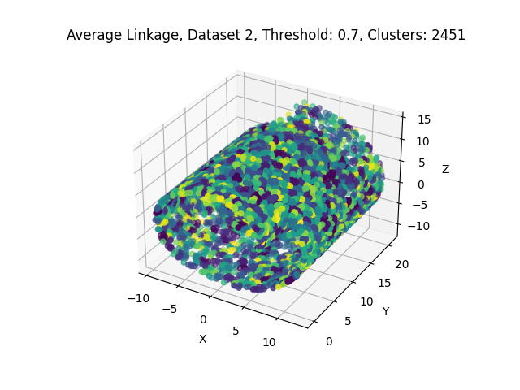
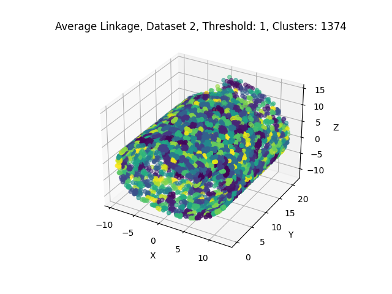
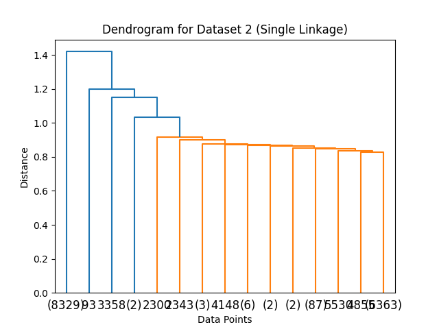

SENG 474: Assignment 3 Report
Nathan Woloshyn
Introduction
Clustering algorithms are unsupervised machine learning techniques that aim to partition a dataset into groups or clusters, based on the similarity between data points. These algorithms are widely used in various domains, such as pattern recognition, image processing, market segmentation, and anomaly detection.
In this assignment, we will explore and analyze the performance of four clustering methods on two provided datasets. The clustering methods include two variants of Lloyd’s algorithm (k-means) with different initialization strategies, and two variants of hierarchical agglomerative clustering with different linkage criteria.
Specifically, we will implement Lloyd’s algorithm with uniform random initialization and k-means++ initialization. For hierarchical agglomerative clustering, we will use Euclidean distance as the dissimilarity measure and employ both single linkage and average linkage as clustering criteria. Our goal is to compare the performance of these methods and gain insights into the characteristics of the datasets and the clustering results.
Section 1: Lloyd’s Algorithm Methods
Implementation
The implementation of the clustering methods is divided into two main sections: Lloyd’s algorithm with uniform random initialization and k-means++ initialization. In both cases, Python and the NumPy library were used to perform the required calculations efficiently.
Lloyd’s Algorithm with Uniform Random Initialization
The first step in the implementation of the random initialization method was to define a function that calculates the Euclidean distance between two points in n-dimensional space. The euclidean_distance function was created for this purpose, using NumPy’s linalg.norm function.
Next, the random_initialization function was implemented to provide a uniform random initialization strategy for the cluster centroids. This function selects k centroids uniformly at random from the dataset.
Finally, the primary function, kmeans_clustering, was implemented to run the k-means algorithm on the given data using the specified initialization method. The algorithm iteratively assigns each data point to the nearest centroid, updates the centroids based on the mean of the assigned points, and checks for convergence using a tolerance value. If the algorithm does not converge within the maximum number of iterations (for this assignment, 100 was chosen as the maximum), it prints a warning message.
Lloyd’s Algorithm with k-means++ Initialization
For the k-means++ initialization, the kmeans_plus_plus_initialization function was implemented. This function selects the first centroid uniformly at random from the dataset and then selects the remaining centroids based on their squared distances to the closest existing centroid. The probabilities of choosing a data point as the next centroid are proportional to these squared distances.
The kmeans_clustering function was also used to run the k-means algorithm with the k-means++ initialization method.
Experiments and Visualization
To evaluate the performance of the clustering algorithms, a series of experiments were run on two datasets using different values of k. The run_kmeans_experiment function was implemented to run the k-means clustering algorithm with different values of k and initialization methods on a given dataset. The clustering results were then visualized using 2D or 3D scatter plots generated by the plot_clusters function, where each cluster is represented by a different color and centroid markers are represented by black ‘x’ symbols.
The cost of the clustering solutions, calculated as the sum of squared Euclidean distances between data points and their assigned centroids, was plotted against the number of clusters (k) using the plot_cost_vs_k function. This function creates a line plot to compare the costs of k-means clustering with random initialization and k-means++ initialization for different values of k. Additionally, the plot_iterations_vs_k function was implemented to visualize the number of iterations required for convergence as a function of k for both initialization methods.
Below are some example clusterings, as well as the cost and number of iterations plots, for the two datasets.
Dataset 1
Clusterings
As can be observed in the two k=7 figures, the two initialization methods produce very similar clusterings. This similarity in performance is expected, as the data points being clustered are randomly generated and both methods are capable of effectively partitioning the dataset.
Cost vs. k
The cost vs. k plot illustrates the relationship between the number of clusters (k) and the sum of squared Euclidean distances between data points and their assigned centroids. As the value of k increases, the cost generally decreases due to the data points being more closely grouped around their respective centroids. However, the rate of decrease tapers off as k becomes larger, indicating diminishing returns for increasing k. Both initialization methods, random and k-means++, show the same trends in cost reduction, suggesting that their performance in partitioning Dataset 1 is comparable. This observation further supports the idea that both methods are effective at clustering the randomly generated data points in this dataset. Both methods are plotted here, but because their cost values are so similar it is difficult to distinguish the two lines.
Iterations vs. k
The iterations vs. k plot reveals the number of iterations required for the k-means algorithm to converge for different values of k and initialization methods. The relationship appears noisy, but a noticeable trend emerges where k-means++ initialization generally converges faster than random initialization, particularly at higher values of k. Furthermore, k-means++ never reaches the iteration limit of 100, while random initialization does so twice. This result indicates that the k-means++ initialization method has an advantage in terms of convergence speed, especially when using larger values of k. Faster convergence can lead to more efficient clustering, highlighting the benefits of using the k-means++ initialization method over random initialization.
Dataset 2
Clusterings
Similar to Dataset 1, the clusterings generated by both initialization methods appear quite alike in the k=3 scenario. However, when k is increased to 25, a discernible difference emerges between the resulting clusterings of the two techniques. This discrepancy is likely attributable to the greater underlying structure present in the data, which allows the k-means++ initialization method to consistently position centroids in a manner distinct from random initialization.
Cost vs. k
Despite the visible differences in the clusterings produced by the two initialization methods, it is noteworthy that they achieve similar cost values. This outcome highlights the effectiveness of both approaches in minimizing the sum of squared Euclidean distances between data points and their corresponding centroids. As a result, even though the cluster assignments may appear different, the overall quality of the clustering solutions remains comparable, demonstrating that both random and k-means++ initialization methods are capable of providing efficient partitioning of the dataset.
Iterations vs. k
Interestingly, in this particular dataset, random initialization tends to converge faster than k-means++ for most k values, except for the maximum k (25). One possible explanation for this counterintuitive finding could be the “tube” shape of the data. This unique structure might lead to a situation where random initialization occasionally places centroids closer to the optimal positions by chance, whereas k-means++ might struggle to effectively capture the elongated nature of the data distribution during its centroid seeding process. Consequently, random initialization could require fewer iterations to converge, as it starts from a position that is closer to the final solution. However, this is a noisy process, so the number of iterations required for convergence can vary significantly. Due to time limitations, the experiment was only run ten times for each k value, so the results are not conclusive. Further experimentation would be required to confirm this hypothesis.
Section 2: Hierarchical Agglomerative Clustering
The primary goal of these experiments is to investigate the performance and behavior of HAC using single and average linkage methods, and evaluate the clustering results with varying distance thresholds.
Experimental Setup:
To assess the behavior of the hierarchical agglomerative clustering algorithm, a set of experiments were conducted on two datasets using single and average linkage methods and varying distance thresholds. The run_hac function was implemented to run HAC with specified linkage methods and thresholds on a given dataset. The clustering results were visualized using 2D or 3D scatter plots generated by the plot_hac_clusters function, with each cluster represented by a different color.
Dendrograms were generated using the plot_dendrogram function to display the hierarchical structure of clusters and the distance between clusters at different levels of the hierarchy. These plots were created for each combination of dataset, linkage method, and threshold.
By analyzing the generated plots and dendrograms, we can gain insights into how the choice of linkage method and distance threshold influences the clustering results, and determine the optimal threshold value for each linkage method. The experiments provide valuable information on the performance of HAC using single and average linkage methods on two different datasets, and facilitate the comparison of their effectiveness in producing meaningful clusters.
Experimental Results
Dataset 1
Sample Clustering Results
Single Linkage


Average Linkage


Dendrograms (truncated to 15)


Dataset 2
Sample Clustering Results
Single Linkage


Average Linkage


Dendrograms (truncated to 15)


Discussion
Dataset 1
In the case of Dataset 1, the single linkage method produced less coherent clusters compared to the k-means clustering results. The single linkage method is sensitive to noise and outliers, which can lead to the formation of elongated or chain-like clusters. This behavior is evident in the sample clustering results for single linkage, where we observe less distinct and less compact clusters.
On the other hand, the average linkage method generated more coherent and well-defined clusters for Dataset 1. Average linkage tends to create more balanced and compact clusters, as it considers the average distance between pairs of points from different clusters. This results in a more robust clustering solution, which is less influenced by noise and outliers. The sample clustering results for average linkage demonstrate that this method was better suited for Dataset 1, producing more meaningful and visually appealing clusters, similar to those obtained using k-means clustering.
In addition to the clustering results, we also examined the dendrograms for Dataset 1 to determine the most meaningful split by identifying the longest join. For the single linkage method, cutting the dendrogram at a distance of 0.3 resulted in the inclusion of all visible clusters on the dendrogram. While this approach allowed for a more detailed view of the cluster structure, it did not yield particularly coherent clusters, as previously discussed.
For the average linkage method, cutting the dendrogram at a distance of 5 produced a partition that divided the data into two well-defined clusters. This cut was chosen based on the observation that it corresponded to the longest join, and thus represented a significant separation between the two resulting clusters. The average linkage method’s ability to form more balanced and compact clusters is evident in this partition, further supporting the conclusion that average linkage is better suited for clustering Dataset 1.
Dataset 2
For Dataset 2, both single and average linkage methods failed to produce visually appealing or sensible clusters. This outcome can be partially attributed to the nature of the dataset, which does not exhibit the two obvious groupings that were present in Dataset 1. Consequently, the HAC algorithm struggles to identify meaningful and distinct clusters in the data.
It is important to note that the k-means clustering methods also generated rather unappealing clusters for this dataset, indicating that the inherent structure of the data might not be well-suited for the clustering techniques employed in these experiments. The lack of clearly separable groups in Dataset 2 may contribute to the difficulty in obtaining meaningful clustering results.
Given the performance of both HAC and k-means clustering algorithms on Dataset 2, it may be beneficial to explore alternative methods in order to better capture the underlying structure of the data.
In order to further analyze the clustering results for Dataset 2, we also examined the dendrograms generated for both single and average linkage methods. We opted to cut both dendrograms low, including all visible clusters, with a distance of 0.4 for single linkage and a distance of 6 for average linkage. By making these cuts, we aimed to capture the most significant separations between clusters, while still considering the visible structure of the dendrograms.
However, even with these cuts, the resulting clusters did not yield particularly meaningful or visually appealing results. This observation further emphasizes the challenges in clustering Dataset 2 using the HAC algorithm with single and average linkage methods. The absence of clearly separable groups in the dataset and the sensitivity of the linkage methods to noise may contribute to the suboptimal clustering results.